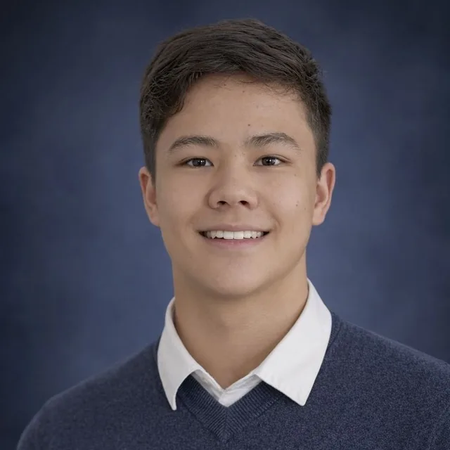
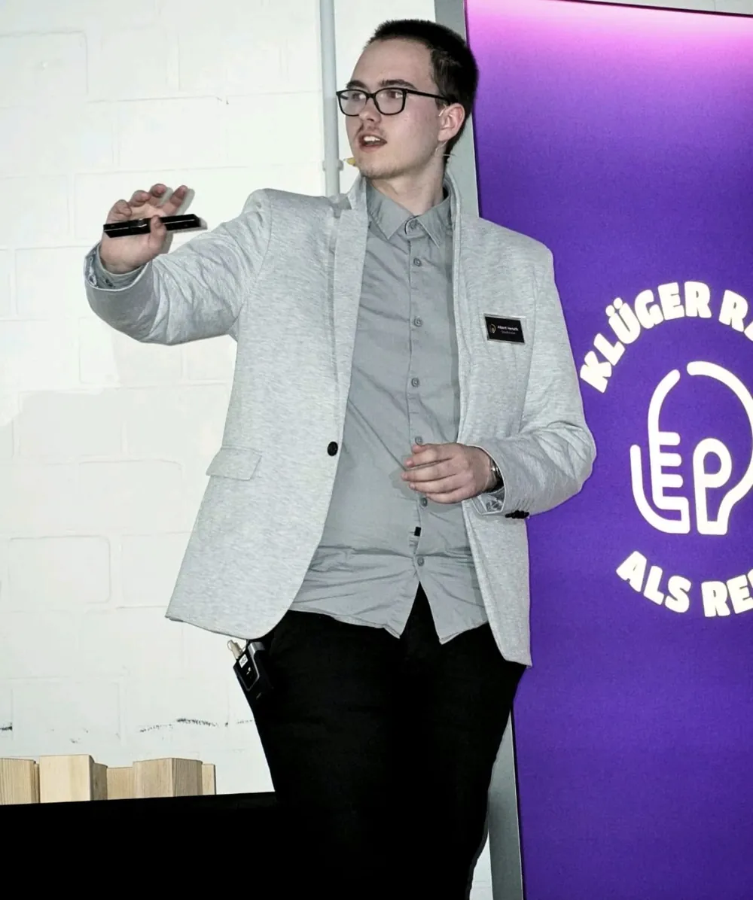

Albert HeruthGründer · KI
Eine Prüfzelle aus Roboter, Kamera und KI prüft chirurgische Instrumente nach der Reinigung auf Blut, Proteinreste und Schäden.


SterilVision ist eine Prüfzelle aus Roboter, Kamera und KI für die Aufbereitungseinheit für Medizinprodukte (AEMP, früher ZSVA). Sie prüft chirurgische Instrumente nach der Reinigung auf Blut, Proteinreste und Schäden.
Ein Roboterarm greift das Instrument und hält es unter eine Kamera mit Ringlicht. Die KI wertet die Aufnahmen aus und markiert auffällige Stellen im Bild.
Nein. SterilVision unterstützt die Sichtprüfung in der Sterilgutaufbereitung. Über die Freigabe eines Instruments entscheidet immer eine Fachkraft.
SterilVision ist ein Forschungsprototyp. Die Prüfzelle steht in Hemmingstedt in Schleswig-Holstein, untersucht wurden bisher drei Instrumententypen. SterilVision ist kein Medizinprodukt, trägt keine CE-Kennzeichnung, ist nicht klinisch validiert und wird nicht verkauft.
Albert Heruth und Jakob Rudolph. Das Westküstenklinikum Heide gab Einblick in die Aufbereitung, die Prüfzelle steht bei der EyeSpec FAW Group in Hemmingstedt.
Sonderpreis „No risk, no fun!“ beim Bundeswettbewerb Künstliche Intelligenz 2026 (Finale am 13. November 2026 in Tübingen) und Finale der Gründungswelle der FH Westküste. Eingetragenes Gebrauchsmuster DE 20 2026 001 663, nicht auf Neuheit geprüft. Berichte und Fotos auf der Presse-Seite